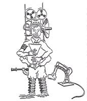

aniel . . . interpret[ed] the
mysterious letters of fire in Belshazzar's banquetting-hall that announced
the doom of Babylon: Bad news bad news...why do we always have to give the bad news?
aniel . . . interpret[ed] the
mysterious letters of fire in Belshazzar's banquetting-hall that announced
the doom of Babylon: Bad news bad news...why do we always have to give the bad news?

aniel . . . interpret[ed] the
mysterious letters of fire in Belshazzar's banquetting-hall that announced
the doom of Babylon: Bad news bad news...why do we always have to give the bad news?
 hh, yes...."invisible" That would describe how some of the teachers at the Jr. College, where I work, see the terps and/or the Deaf student. Case in point - this week when one of our interpreters was killed in a car wreck, some of the teachers, who had that interpreter in class since the beginning of the semester, didn't even know her name. Then, when informing the class of the tragedy, called her "the girl who comes in and signs."
hh, yes...."invisible" That would describe how some of the teachers at the Jr. College, where I work, see the terps and/or the Deaf student. Case in point - this week when one of our interpreters was killed in a car wreck, some of the teachers, who had that interpreter in class since the beginning of the semester, didn't even know her name. Then, when informing the class of the tragedy, called her "the girl who comes in and signs."
 know one of the goals we have as interpreters is to interrupt the proceedings as little as possible. Anyway, I got this letter from my Mom, and I am not making this up, I am copying and pasting it here just like she sent it to me. I thought you might enjoy a chuckle today. " Donna, I went to the play, Saturday Night Fever: yesterday afternoon. It was good, but even better they had interrupters, a husband and wife. He did a great job and I tended to watch the interrupters rather than the actors. And where our seats were it was easy to see them. I even signed to them when the play was over. "Good job on interrupting." And that my daughter was an interrupter. "
know one of the goals we have as interpreters is to interrupt the proceedings as little as possible. Anyway, I got this letter from my Mom, and I am not making this up, I am copying and pasting it here just like she sent it to me. I thought you might enjoy a chuckle today. " Donna, I went to the play, Saturday Night Fever: yesterday afternoon. It was good, but even better they had interrupters, a husband and wife. He did a great job and I tended to watch the interrupters rather than the actors. And where our seats were it was easy to see them. I even signed to them when the play was over. "Good job on interrupting." And that my daughter was an interrupter. "
 omeone once called me asking for an interloper!
omeone once called me asking for an interloper!
have been called an "interpretator" on many occasions.
nterpretater: I always wondered. If
interpretaters had children, would they be interpretater tots!?!?
was on stage in a huge convention center in Billings, Montana interpreting the closing of a motorcycle rally. There were over 60,000 people there (along with at least 6 Deaf bikers). As the president was thanking all of the volunteers and workers for a week of dedication, someone shouted out from the audience: "DON'T FORGET THE CLOSED CAPTION LADY!" As I signed it, my brain said, "He means YOU!" and it was all I could do to "stay in role" and keep signing without laughing. (I did smile though!)
nd me often called an InterprétRe... Right word in french being Interpréte, without the R... A prêtre is a priest... So this is a beautiful slip of the tongue indeed! I always reply that to be an interpreter, we often need loada faith and devotion (alleluiah!) but we are (fortunately) not bound to the same strict vows as our brothers-in-black... LOL
I could give you a very long list of the 'things' i have been called... Just this little one, recently, at the police station, they asked me 'are you the one who does the gestures for the mutes???' ... made me boil inside me of course, but i did my best blonde smile and i tried to educate them, explaining them that i do the signs for the policemen who do the voice but don't do the signs, and i do the voice for the deaf persons who do the signs and don't do the voice, not because they are mute, but because they don't hear the voice they do... and that no, it is not a hobby, but a true profession that requires five years of university to earn the title of 'interpreter'....(this part to reply to the question : 'and you do that all the time?') GRIN
thought I had been called everything:
The Signer (hey, I'm the Talker too, dangit)
The Interpretator
The Friend
The Sign Lady
The Deaf/Death Signer
The One Who Works with the Umm. . .
The Daughter
The Sister
The Wife
The Translator
Let it be the Lawyer who bests them all. Dub me:
"Bring the Girl in. . . Let's get this done while we've got The Girl here. . ."
Interpreter shall remain fair and impartial. . . Interpreter shall not shed blood while engaged in the interpreting assignment. . . Interpreter shall not judge participants. . . Interpreter shall not ask for clarification whether he meant "House Girl" or "Field Girl". . .
Close eyes. Think "Legal Rates. . . Legal Rates. . . Jai Guru Deva, OM".
 a! What a hoot! I 'bout died when I read this! Some might consider me bold, or too bold, but this homey GIRL don't play
that! On many occasions I have received the same kinds of labels.
Here's a quick remedy I found affective:
When the person doing the "labeling" says something like "While the girl is
still here" I walk (firmly, and professionally) to the person with my hand out
reached for a shake, and say "Please forgive me for being so rude! My
name is Stephanie Nichols - I'm a Sign Language Interpreter" The person
always stops in their tracks trying to figure out what in the world spurred
me to re-introduce myself, but hey, they never call me "the girl" again.
a! What a hoot! I 'bout died when I read this! Some might consider me bold, or too bold, but this homey GIRL don't play
that! On many occasions I have received the same kinds of labels.
Here's a quick remedy I found affective:
When the person doing the "labeling" says something like "While the girl is
still here" I walk (firmly, and professionally) to the person with my hand out
reached for a shake, and say "Please forgive me for being so rude! My
name is Stephanie Nichols - I'm a Sign Language Interpreter" The person
always stops in their tracks trying to figure out what in the world spurred
me to re-introduce myself, but hey, they never call me "the girl" again.
rriving at a small group meeting one day, a hard of hearing woman, wondering if I was the terp of the hour, approached me and asked, "YOU T-E-R-M-I-N-A-L?"
 Return to the table of contents for "Humor and stories for interpreters".
Return to the table of contents for "Humor and stories for interpreters".